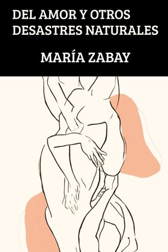

Le pouvoir
Le pouvoir peutaussi emprisonner

Une vie enviable. Un homme qui la méprise.
« Un roman saisissant, qui surprendra » JULIA NAVARRO
Un narrateur qui s’accuse lui-même tout en accusant les autres.
Alonso ne dénonce pas la corruption de l’extérieur : il appartient au monde qu’il juge. La tension naît de cette contradiction, de sa lucidité face à la pourriture et de tout ce qu’il est encore prêt à protéger.
« Alonso Vega est un personnage qui agace, amuse et fascine tout à la fois. Un roman féroce, impossible à lâcher »
Luis Alberto de CuencaCertains se paient en argent. D’autres, avec sa conscience.
Un roman d’une grande tension narrative et d’une finesse psychologique aiguë, où l’humour et la cruauté révèlent ce que les bonnes manières dissimulent si souvent.
Miseria est un portrait de notre époque : de la décadence et de la dégradation morale de l’Espagne et de l’Europe d’aujourd’hui, qui dépasse largement la politique ou une seule classe sociale.
« Je sais que c’est un roman dérangeant, mais c’est un malaise qu’il faut traverser »
« Alonso hérite de bien plus que de l’argent. Il hérite d’une morale. Ce qui m’intéresse, c’est de savoir dans quelle mesure nos familles nous transmettent, au-delà des biens et des traumatismes, une certaine explication du monde : ce que signifie réussir ou échouer, qui nous devons respecter, ce que nous nous autorisons à faire pour survivre. C’est ce qui arrive à Alonso »
Un regard corrosif sur le monde, porté par un homme qui inflige aux autres la même cruauté qu’à lui-même.
Il ne s’accorde aucune supériorité morale. Et il n’épargne rien.
Miseria dépeint un monde d’apparences impeccables et de vies intimes dévastées. Ses personnages nous obligent à nous demander ce qui se passe lorsqu’un être brisé atteint sa dernière limite : si sa chute finit de le détruire ou si une possibilité de rédemption surgit précisément à cet instant.
Dans une prose lucide, brillante et sans concession, María Zabay donne à Alonso Vega de Saliente une voix corrosive, dérangeante, parfois irrésistiblement drôle. On y retrouve quelque chose de la férocité morale de Houellebecq et du John Self de Martin Amis, ancré ici dans les élites économiques et familiales de l’Espagne contemporaine.
« Quand tout s’achète, la vérité devient l’actif le plus dangereux »
Alonso Vega de Saliente, héritier de l’empire d’infrastructures PUENTIA, doit faire face à la mort soudaine de son père. Dans un univers d’opulence et de cynisme, la disparition du patriarche provoque des révélations sur les origines troubles de la fortune familiale.
Entre une OPA hostile, les enquêtes de l’UCO et des relations où le désir est lui aussi une forme de pouvoir, Alonso découvre que la corruption se niche autant dans les bilans financiers que dans les liens affectifs.
Le pouvoir peutaussi emprisonner
Un nom qui ouvreet ferme des portes
Le désir peutdevenir domination
Survivre exigede se regarder en face
« Le jour où mon père est mort, je déversais ma semence dans une stagiaire au regard affamé, choisie davantage pour sa docilité que pour sa chair. Ce n’était ni de l’amour, ni du sexe, ni du désir. C’était de l’orgueil, de la lassitude ; une saleté cérémonielle qui me maintenait à peine en érection tandis que mon téléphone vibrait pour m’annoncer la nouvelle… »
Personne n’en sort indemne.
Alonso observe le monde avec sarcasme et mépris, mais il appartient précisément à l’univers qu’il juge. Intelligent, privilégié et habitué à commander, il commence à découvrir qu’hériter d’un empire, c’est aussi hériter de ce qui l’a rendu possible.

El zapato de la lengua rota
Valentina

La alumna

El contrato

El amor y otros desastres naturales

Aislada

Manhattan
Diosas de papel

Breve historia de la especie humana

Un viaje al éxito

Liderar con la palabra

Todos contra el bullying
« Dans une prose aussi fluide que les meilleurs dialogues d’une série, Valentina — courageuse, imparfaite et profondément humaine — nous fait rire, soupirer et nous émeut »
Carmen Posadas
« Un regard critique qui allie irrévérence et profondeur. Une voix puissante et fraîche dans la fiction contemporaine »
El Español
« Espiègle, effrontée, Valentina s’inscrit dans la tradition érotique que les auteurs libertins du XVIIIe siècle qualifiaient, par euphémisme, de “roman philosophique” »
Arturo Pérez-Reverte
« María Zabay est de ces esprits inquiets qui ne se contentent pas d’observer la réalité : ils ont besoin de la disséquer »
El Nuevo Digital